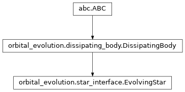

orbital_evolution.star_interface module¶
Class Inheritance Diagram¶

An interface to the POET star library.
-
class
orbital_evolution.star_interface.EvolvingStar(*, mass, metallicity, wind_strength, wind_saturation_frequency, diff_rot_coupling_timescale, interpolator)[source]¶ Bases:
orbital_evolution.dissipating_body.DissipatingBodyA class for stars following interpolated stellar evolution tracks.
-
__init__(*, mass, metallicity, wind_strength, wind_saturation_frequency, diff_rot_coupling_timescale, interpolator)[source]¶ Create a star with the given properties and evolution.
Parameters: - mass (-) – The mass of the star in solar masses.
- metallicity (-) – The metallicity ([Fe/H]) of the star.
- wind_strength (-) – The efficiency of the wind carrying away angular momentum.
- wind_saturation_frequency (-) – The frequency at which the wind loss saturates in rad/day.
- diff_rot_coupling_timescale (-) – The timescale for differential rotation coupling.
- interpolator (-) – An instance of stellar_evolution.MESAInterpolator to base the stellar evolution on.
Returns: None
-
_evaluate_stellar_property(property_name, age, deriv_order=None)[source]¶ Evaluate a library function at a single age or array of ages.
-
core_inertia(age, deriv_order=0)[source]¶ Return the moment of inertia of the stellar core at the given age.
-
deriv_ids= {'AGE': 1, 'NO': 0, 'ORBITAL_FREQUENCY': 3, 'SPIN_FREQUENCY': 2}¶
-
deriv_list= ['NO', 'AGE', 'SPIN_FREQUENCY', 'ORBITAL_FREQUENCY']¶
-
detect_stellar_wind_saturation()[source]¶ Tell a fully configured star to set its wind saturation state.
-
envelope_inertia(age, deriv_order=0)[source]¶ Return the moment of inertia of the stellar env. at the given age.
-
lib_configure_body= <_FuncPtr object>¶
-
modified_phase_lag(*, zone_index, orbital_frequency_multiplier, spin_frequency_multiplier, forcing_frequency, deriv)[source]¶ Return the phase lag times the love number.
The spin of the star must be set by calling the configure method.
Parameters: - zone_index (-) – The index of the zone whose lag to return.
- orbital_frequency_multiplier (-) – The multiplier of the orbital frequency in the expression for the forcing frequency.
- spin_frequency_multiplier (-) – The multiplier of the spin frequency in the expression for the forcing frequency.
- forcing_frequency (-) – The forcing frequency for which to return the phase lag.
- deriv (-) – One of the derivative IDs in self.deriv_ids identifying what derivative of the phase lag to return.
Returns: The phase lag times the love number for the given parameters. If the forcing frequency is exactly 0.0, two values are returned, the first for infinitesimal positive and the second for infinitesimal negative forcing frequencies.
-
select_interpolation_region(age)[source]¶ Prepare for interpolating stellar quantities around the given age.
Parameters: age (-) – The age around which interpolation will be needed. Returns: None
-
set_dissipation(*, zone_index, tidal_frequency_breaks, spin_frequency_breaks, tidal_frequency_powers, spin_frequency_powers, reference_phase_lag, inertial_mode_enhancement=1.0, inertial_mode_sharpness=10.0)[source]¶ Set the dissipative properties of one of the zones of a star.
Parameters: - zone_index (-) – Which zone to set the dissiaption for (0 - envelope, 1 - core).
- tidal_frequency_breaks (-) – The locations of the breaks in tidal frequency in rad/day. Entries should be sorted.
- spin_frequency_breaks (-) – The locations of the breaks in spin frequency in rad/day. Entries should be sorted.
- tidal_frequency_powers (-) – The powerlaw indices for the tidal frequency dependence. Should be indexed in the same order as tidal_frequency_breaks, but must contain an additional starting entry for the powerlaw index before the first break.
- spin_frequency_powers (-) – The powerlaw indices for the spin frequency dependence. Should be indexed in the same order as spin_frequency_breaks, but must contain an additional starting entry for the powerlaw index before the first break.
- reference_phase_lag (-) – The phase lag at the first tidal and first spin frequency break. The rest are calculated by imposing continuity.
- inertial_mode_enhancement (-) – A factor by which the dissipation is enhanced in the inertial mode range. Must be >= 1 (1 for no enhancement).
- inertial_mode_sharpness (-) – Parameter controlling how sharp the transition between enhanced and non-enhanced dissipation is.
Returns: None
-